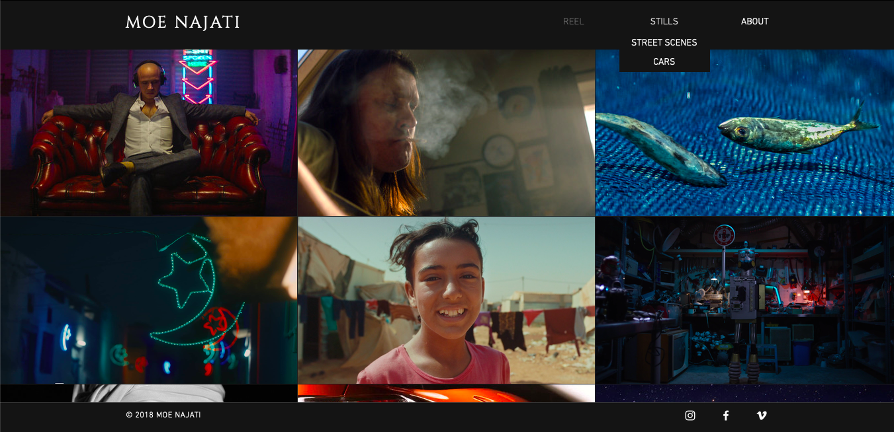
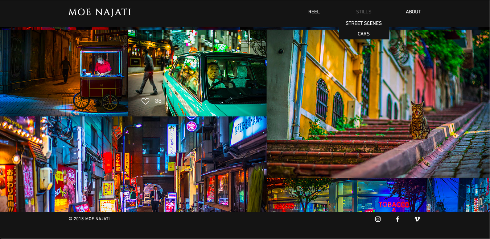

My first research site is the personal site of photographer/videographer Moe Najati. I enjoy how the top navbar and the footer stay in place as you scroll and navigate through all of the content on the page. This offers a great user experience as no matter what asset the user is currently viewing, the navbar is always present to offer a road to another page, as well as social media icons in the footer, should the user want direct access to the artist’s other online profiles. The choice of fonts and color for this website are very elegant and professional, and gives off a movie production vibe, which is spot on as his profession is film direction and cinematography/photography. This way the website is designed concisely to his target user which would appear to be anything from production studios to any media company looking to hire him for a job. His portfolio is also very neat, separated into categories with their own page of content. I enjoy how the navbar has only three simple links to a landing page for the category the user chose, but then the content is what drives the user to the following pages instead of text buttons. This way, the user will follow through to the most visually pleasing element in their eyes, instead of reading words to find out what’s next. The image placements are really interesting, as they aren’t laid out like a grid system, but instead are all placed directly next to each other with some images being larger than others, and no spaces in between them almost like a mosaic or collage. This adds a very unique aesthetic to the site and transforms the simplistic layout just by virtue of the content. The only sacrifice is that the images placed this way aren’t fully responsive, so if a user shrinks their browser they will have to scroll left to right in addition to navigating down the page in order to see all the images. Yet, the mobile version of the site still retains a clean format and placement of images without losing any content to the left or right.

